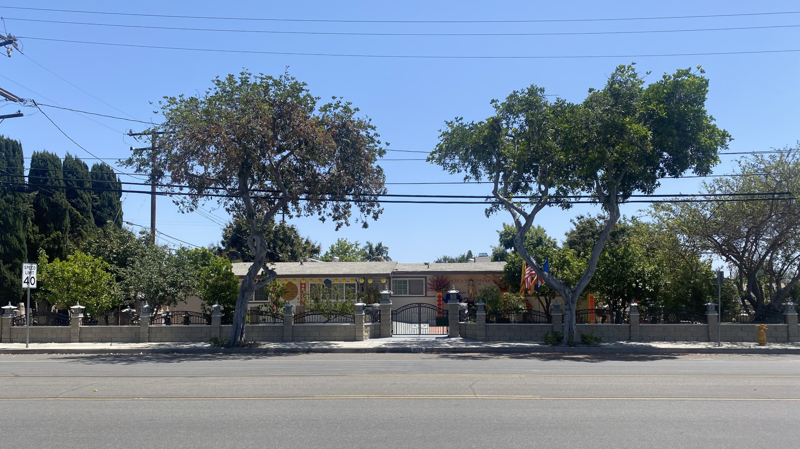
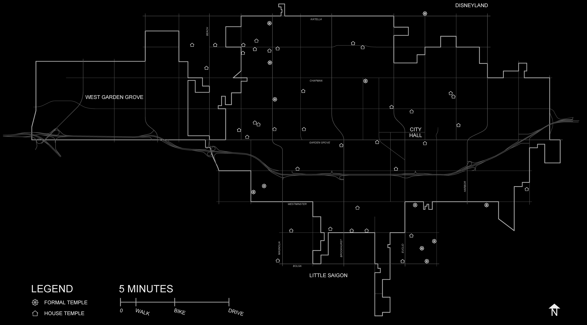

I can feel the familiar itch of a mosquito bite beginning to spread across the back of my hand. We’re standing in the backyard of my mom’s coworker’s home, a beautiful garden lush with flowers and a serene pond, undoubtedly the breeding ground for the mosquitoes attacking us on this humid summer day. Cô Uyên notices my excessive scratching and rubs the back of her neatly shaved head. “They always get me too,” she laughs, “my head makes an easy target.”

Cô Uyên’s house is both a home and a temple. It is a space for gathering, visiting, praying, eating, sleeping, and living. And in our hometown of Garden Grove, California, at the heart of Orange County’s Little Saigon, there are many more like it. These “house-temples,” as we call them, are scattered across the city in the homes of Vietnamese Buddhist monks and nuns like Cô Uyên, who, whether out of a lack of resources to build more formal temple buildings or out of a simple sense of neighborliness, have transformed their single-family residences into functional gathering and ritual spaces. These residences also operate as central places from which monks and nuns offer charitable and educational services. In doing so, house-temples reimagine the single-family house as something far removed from its intended or historical uses.
Emerging more of necessity than by intention, the vast majority of house-temples are undocumented in any official capacity, making it difficult to track their history definitively. However, from what we know of the city’s history and our experiences living in it, we can assume that the first house-temples appeared in conjunction with the development of Little Saigon in the mid- to late-1970s, following the Fall of Saigon and the arrival of Vietnamese refugees to the United States en masse. After an initial wave of refugees relocated to the affordable neighborhoods along Bolsa Avenue in Westminster, Little Saigon gradually expanded north into Garden Grove. Practicing Buddhists of limited means found that the predominantly white neighborhoods of these cities lacked a Buddhist community. In the absence of existing temples or the resources to build them, the houses of local monks and nuns provided a necessary alternative.
This alternative is not without its own costs, and the lives of house-temples are constantly influenced by financial difficulties. Cô Uyên, for example, expressed the difficulty for monks and nuns in providing for themselves (monks and nuns in Little Saigon often work full-time jobs outside of their devotion), as well as the determination that all money gifted to her and her temple be redistributed through charitable service. These financial difficulties, along with the desire of many Vietnamese Buddhists to visit monks’ residences and be in the presence of wise and devout mentors, provide very practical motivations for the development of these houses into more persistent gathering spaces.
As Little Saigon has grown alongside further waves of immigration, house-temples continue to emerge across the region, even alongside the establishment of larger, traditional temples. House-temples are so firmly embedded in Vietnamese-American neighborhoods that even non-Buddhist Vietnamese-Americans are familiar with and can often identify them in passing. Because the existence of these structures is so common, Vietnamese-Americans will most commonly refer to a house-temple as a “chùa,” the Vietnamese word for temple. There has been little practical need to distinguish between a formal temple and a house-temple, and therefore there is no standard term for the “house-temple.” It is our hope that through this research we can understand these homes as neither house nor temple, but as something else. In doing so, we might begin to challenge our assumptions and see the single-family home as a space open to reimagination.

And so, it’s on this hot mid-June morning that we find ourselves standing in front of Cô Uyên’s residence, a house-temple in Garden Grove. Located on the edge of a cul-de-sac just two miles from my parents’ house and shouldering a busy street that parallels the Garden Grove Freeway, her house is one that I’d driven past hundreds of times but had never noticed before. After ringing the doorbell, we stand at the front door for a few minutes contemplating whether or not we had the right address, but the image of a lotus flower on the gate confirms that we are at a Buddhist residence. We call Cô Uyên, who instructs us to enter through the unlocked gate to the backyard.
You can read the full article in Pidgin Issue 31.